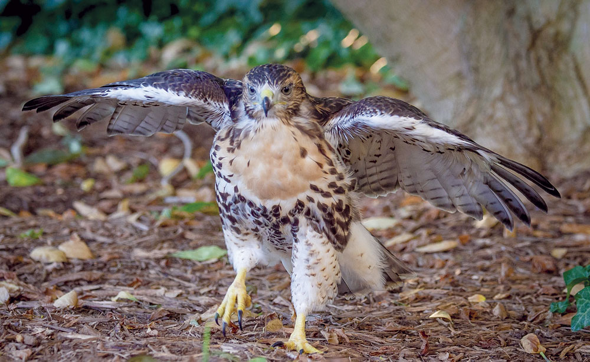

Wildlife Education
What do you do if you find a baby bird on the ground?
Leave it alone! Every year thousands of baby animals are baby-napped by people that think they are doing the right thing. COVID increased the number of people home and outside increasing the amount of human wildlife interactions. During the spring baby birds everywhere are fledging from the nest. They will hop around on the ground, and eventually learn to fly. They are not abandoned. Mom and dad are just out getting them some food.
But you are really worried and feel you MUST do SOMETHING!
Here is a good video that will help you out. Enjoy!
WARNING:If you are not easily offended. This one is hilarious. Might be some language.